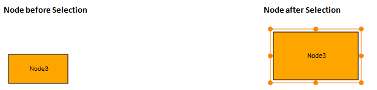

A selected node is indicated using a rectangular resizer over the node’s border. Interactions using the mouse will affect elements that are currently selected.
Property
|
Property |
Description |
Type of the Property |
Value it Accepts |
Any Other Dependencies/ Sub-Properties Associated |
|
AllowSelect |
Gets or sets a value indicating whether the node can be selected or not. The default value is set to True. |
Dependency property |
Boolean (true/false) |
No |
A node can be selected at run time just by clicking on the node.

Figure 42: Node Selection
The two images above differentiate the appearance of the node before and after selection.
AllowSelect
The AllowSelect property can be used to enable and disable the node selection. When this property is set to true, it is possible to select the node. Otherwise, the node cannot be selected. The default value is true.
The AllowSelect property can be set in the following way:
 Using Builder
Using Builder